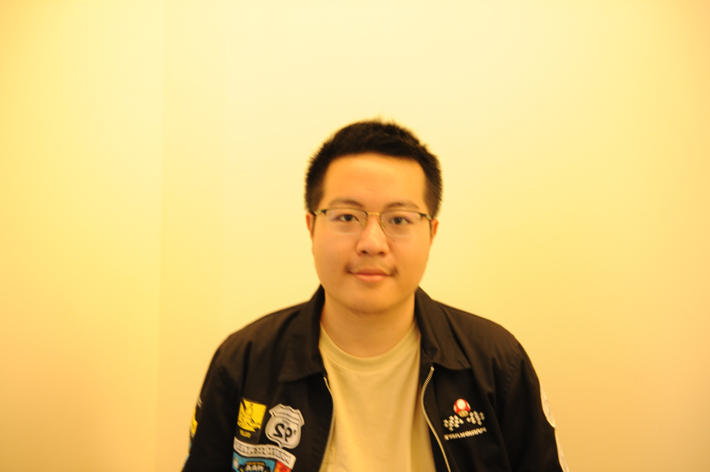

Yichen Guo
Seattle, WA | (551) 998-5948 | yg2258@nyu.edu | LinkedIn | GitHub
Education
New York University, College of Arts & Sciences — Dec 2024
B.A. in Computer Science and Psychology, minor in Data Science; GPA: 3.86/4.0
New York, NY
Skills
- Programming Languages: JavaScript, Java, Python, HTML/CSS, C, R
- Frameworks: Spring Boot, Node.js, Flask, React, Vue, Angular, Express, Electron
- Tools: RESTful API, GraphQL, MongoDB, PostgreSQL, MySQL, Heroku, Git, AWS, Microsoft Azure, Docker
- General Skills: Full-Stack Development, Operating Systems, Data Structures, Basic Algorithm, Parallel Computing, OOP
Professional Experience

TikTok, San Jose, US
Software Engineer (February 2025 – Ongoing)
- Worked on improving TikTok Ads measurement products using Typescript, React, etc.

Huawei, Nanjing, China
Software Engineer Intern (Jun 2024 – Aug 2024)
- Spearheaded the redesign and deployment of Huawei HarmonyOS's app search feature, integrating cached app usage history with an Elasticsearch-based recommendation algorithm, enhancing search quality by 49%.
- Reduced app information retrieval latency by 37.8% through the implementation of Java thread pool techniques.
- Developed APIs using Spring Boot, MyBatis, and SQL to automate data retrieval, reducing storage issues by 24.5%.
Octavate (Client: Warner Bros.), New York, NY
Software Engineer Intern (May 2023 – Aug 2023)
- Designed a multi-tier pipeline system that collects information on 1,200+ global events using Python Selenium and Google Cloud Compute Engine, feeding it to a web interface to display music talents for investors.
- Led the development of an interactive React web interface to display queried MySQL data from AWS.
- Optimized backend scripts using LangChain and OpenAI LLMs, improving scraping efficiency by 37.5%.
NYU Dynamical Systems Lab, New York, NY
Data Analysis Research Assistant (Jun 2022 – Dec 2022)
- Constructed 5 MATLAB image-processing programs to extract velocity fields from over 3,000 frames.
- Co-authored and published a report in a SCI journal, receiving the NYU Undergraduate Research Award. [Publication]
Didi (China's Uber), Beijing, China
Information Technology Intern (Jun 2021 – Aug 2021)
- Refactored the codebase for Didi’s internal recruiting system and secured user authentication using RESTful APIs, Node.js, Express, AJAX, cookies, and sessions.
Relevant Projects
AI-based Desktop Sudoku Solver App – “SudokuW/Ease” [GitHub]
Feb 2023 – Sept 2023
- Prototyped a desktop application to scrape and solve Sudoku puzzles using JavaScript, Electron, GraphQL, Vue, Flask, PostgreSQL, SQLAlchemy, WebSocket, and TailwindCSS.
- Constructed a Python DFS and Constraint programming Sudoku algorithm that solves 12 world’s “hardest” puzzles in 0.04s.
C-based Multithreaded RLE Encoder
Jan 2023 – Feb 2023
- Designed a C encoder for generating the Run Length Encoded string using POSIX threads and two producer-consumer algorithms, achieving a 0.692 speedup for a 20,000-size input.